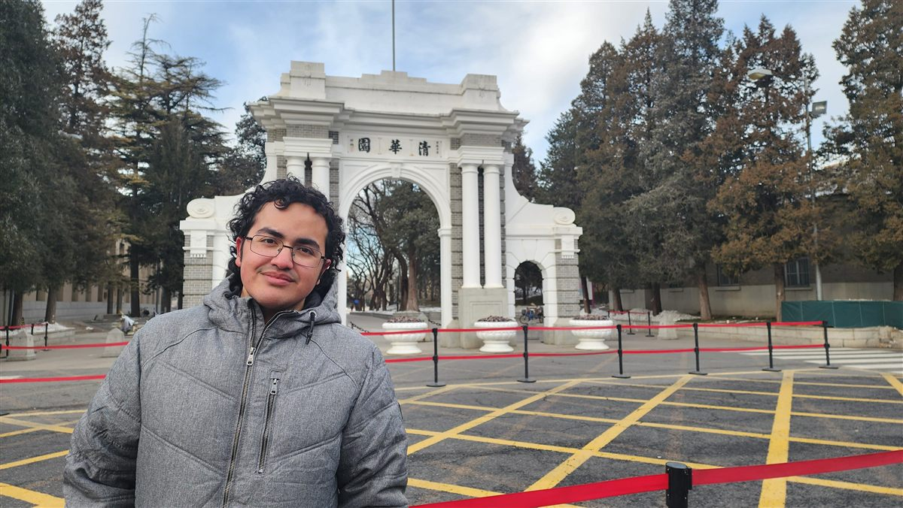

Innovación y emprendimiento · Investigación en educación · Producto digital con IA
Psicólogo y Magíster en Psicología Educacional (UC). Cofundador de AprendeLocal. Investigo, enseño y construyo herramientas digitales para que las personas aprendan mejor.
Abierto a: roles en innovación y educación · proyectos web · colaboración en investigación
Tres tradiciones conviven en mi trabajo: el laboratorio, el emprendimiento y el código.
Soy psicólogo y Magíster en Psicología Educacional de la Pontificia Universidad Católica de Chile. Mi trabajo une investigación aplicada en educación, gestión de innovación y desarrollo de producto digital.
Llevo cuatro años en investigación universitaria (proyectos FONDECYT y laboratorio UC), con foco en evaluación educativa asistida por inteligencia artificial. Cofundé AprendeLocal SpA, tecnología educativa para escuelas rurales de Chile y Brasil, reconocida en competencias de innovación en China, Brasil y Chile.
Además construyo aplicaciones web en producción (frontend, backend y bases de datos) con desarrollo asistido por IA. Practico la atención plena como brújula de trabajo: claridad antes que ruido, profundidad antes que prisa.

Design Thinking, Lean Startup y pitch ante jurados nacionales e internacionales.
Aplicaciones web completas con Supabase y Firebase, PWA e IA local al servicio del aprendizaje.
Diseño metodológico, análisis cuantitativo y cualitativo (R, SPSS) y evaluación educativa.
«Dondequiera que vayas, ahí estás.»Jon Kabat-Zinn
Proyectos en curso y en producción. Cada uno tiene una puerta abierta: visítalo o escríbeme directamente.
Plataforma de educación científica para escuelas rurales de Chile y Brasil, basada en el aprendizaje situado en el lugar. PWA con contenidos geolocalizados, base de datos en Supabase y funcionamiento en baja conectividad.
cofundador · desde 2025Metodología de evaluación basada en modelos de IA ejecutados localmente, que resguarda la privacidad de los datos y funciona en contextos de recursos limitados (FONDECYT N.°1251102).
tesis de magíster · aprobada 2026Sitios y aplicaciones completas (frontend, backend, autenticación y base de datos), desde el levantamiento de requerimientos hasta el despliegue y la mantención.
Revisión sistemática y meta-análisis en psicología educacional: cribado de más de 500 estudios con metodología PRISMA para sintetizar la evidencia disponible.
investigación en cursoSi investigas, enseñas, emprendes o necesitas construir una herramienta digital en educación, me encantaría conversar.
Cuatro años en investigación universitaria: evaluación educativa con IA, desarrollo del lenguaje e infancia.
Seminario de resultados de tesis ante investigadores del Instituto Milenio MISTRALL (Literacidad y Aprendizaje Transformativo). Participación confirmada en el Congreso CIEDS 2026, Villarrica (octubre).
Desarrollo de una metodología de evaluación educativa basada en modelos de IA ejecutados localmente, orientada a resguardar la privacidad de los datos y a su uso en contextos de recursos limitados. Tesis de magíster aprobada en 2026.
Leer en el repositorio UC ↗Apoyo en recolección, procesamiento y análisis de datos en un proyecto sobre desarrollo del lenguaje y prácticas pedagógicas.
Participación remota en el programa de pasantías del Hemispheric University Consortium.
Codificación y análisis de datos de interacción, revisión bibliográfica y apoyo en la preparación de material de investigación.
Pontificia Universidad Católica de Chile
Pontificia Universidad Católica de Chile
Pontificia Universidad Católica de Chile
Pontificia Universidad Católica de Chile
¿Trabajas en evaluación educativa, lenguaje o IA aplicada? Colaboremos.
Proponer colaboraciónHe trabajado con emprendedores, docentes, estudiantes y trabajadores. La práctica es la misma: presencia, claridad y respeto por quien aprende.
Diseño y desarrollo de la plataforma (PWA + Supabase), articulación de un equipo binacional Chile–Brasil y postulación a programas de aceleración internacionales. Etapa de validación.
Sitios y aplicaciones completas para proyectos propios y clientes, con desarrollo asistido por IA (Claude Code, Antigravity): requerimientos, despliegue y mantención.
Diseño e implementación de cursos, asesorías y workshops para emprendedores; articulación con mentores y proveedores; Design Thinking y Lean Startup; gestión con Notion, Asana, Trello y Monday.
Relator freelance de capacitaciones presenciales sobre aversión al riesgo, con grupos de 10 a 30 trabajadores operativos.
Teorías de la Cognición; Inteligencia, Pensamiento y Lenguaje; Desarrollo del Lenguaje Oral y Escrito. Sesiones prácticas y retroalimentación a estudiantes.
Sistema de formación basado en Aprendizaje Basado en Proyectos, iterado a partir de pruebas con usuarios.
Proyecto para fortalecer la relación familia–escuela: levantamiento de información, entrevistas a actores clave y diseño de proyecto.
Coordinador externo y del Club de Lectura del Club Xuexi UC (2026–); voluntario PALLQA UC con ATD Cuarto Mundo en Cusco, Perú (2024); encargado de RR.HH. en Fundación Comisiones Futuro (2020–2022).
Competencias de innovación en China, Brasil y Chile, con cobertura en medios nacionales e internacionales.
Universidad de los Andes, Chile. Solución a un desafío real presentada mediante pitch ante jurado.
Escuchar entrevista en Radio Cooperativa ↗Con el proyecto EcoCycle. Incluye una pasantía presencial en Tsinghua (2027).
Con el proyecto que dio origen a AprendeLocal. Incluyó una pasantía en Beijing y Nanjing (enero 2026).
Leer nota de Psicología UC ↗Con AprendeLocal y participación en Rio Innovation Week, Brasil.
UC Chile · Tec de Monterrey · Uniandes. Propuesta de valor y modelo de implementación de un videojuego de inteligencia socioemocional, en equipo interuniversitario.
Entrevista al equipo ganador de Challengers, Concurso Nacional de Emprendimiento (min. 11:46).
Escuchar ↗ Psicología UC · mayo 2026La mejor universidad de China destaca un proyecto que lleva ciencia a escuelas aisladas.
Leer ↗ Xinhua / Tsinghua LAC · feb 2026Jóvenes latinoamericanos conocen la experiencia china de reducción de la pobreza; declaraciones citadas.
Leer ↗ CGTN en Español · ene 2026Cobertura de la gira de estudios sobre reducción de la pobreza en China, con entrevista a participantes.
Leer ↗¿Eres periodista, organizas un evento o buscas un speaker sobre innovación educativa?
ContactarEsta página existe en los tres idiomas en los que pienso, estudio y sueño.
La forma más rápida de contactarme es por correo o LinkedIn. Cuéntame qué tienes en mente: una oportunidad, un proyecto o una idea.
O elige un motivo y el correo se abre listo para enviar: